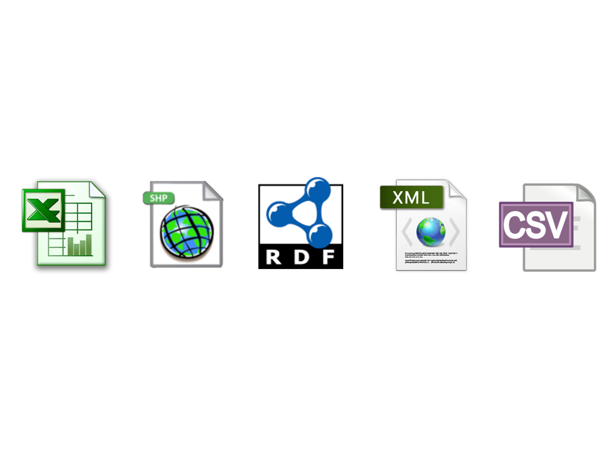
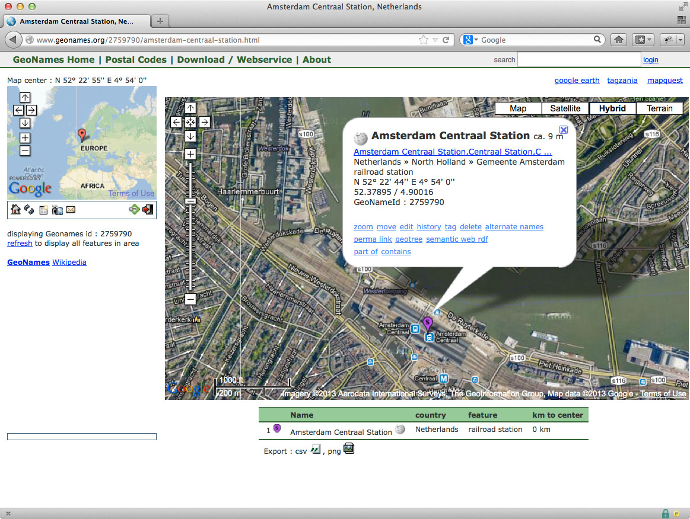
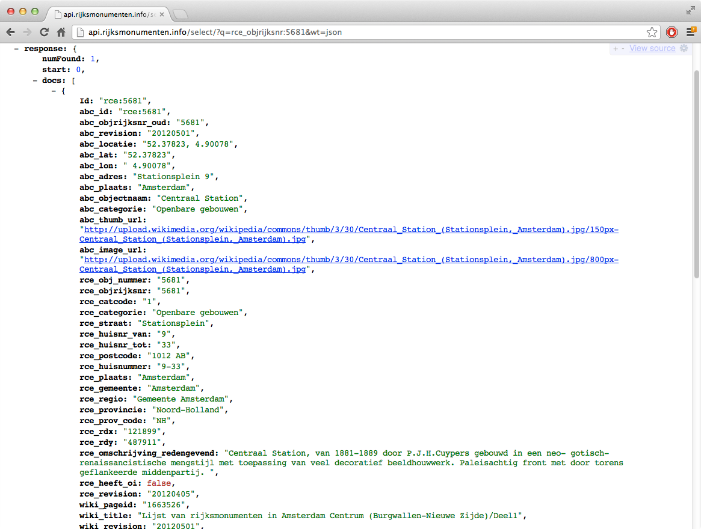
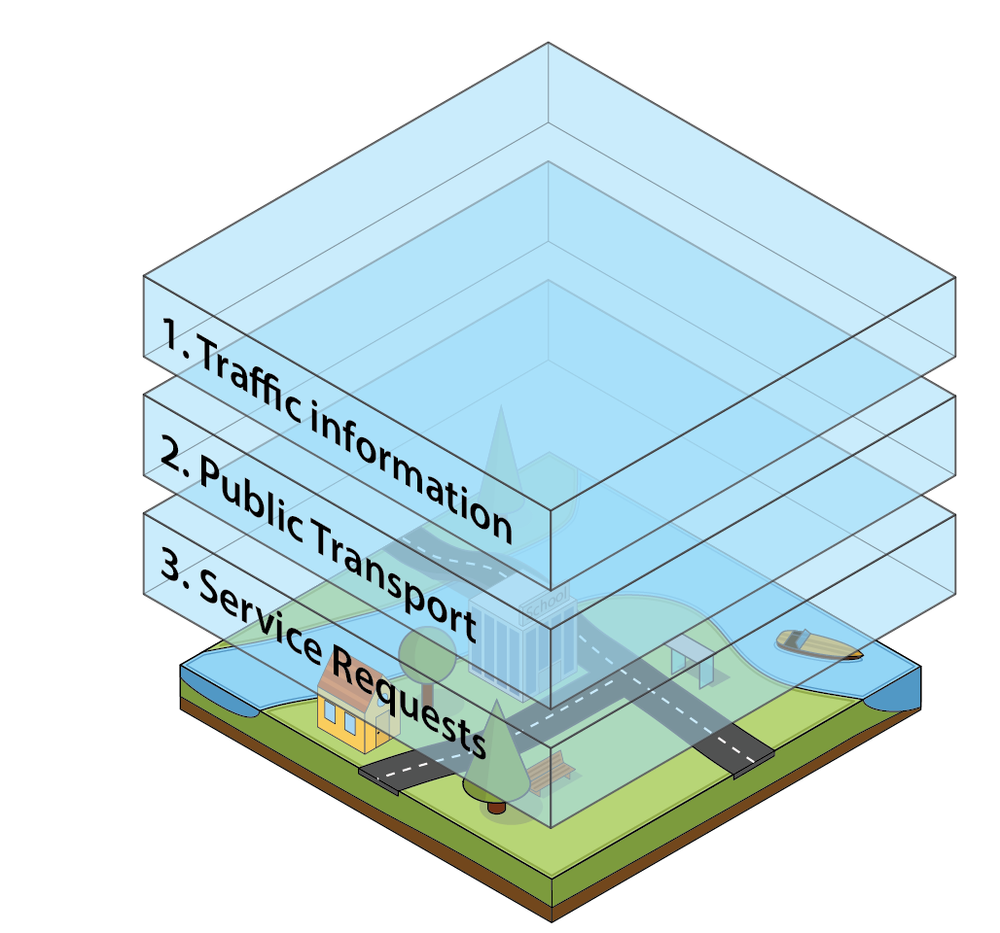
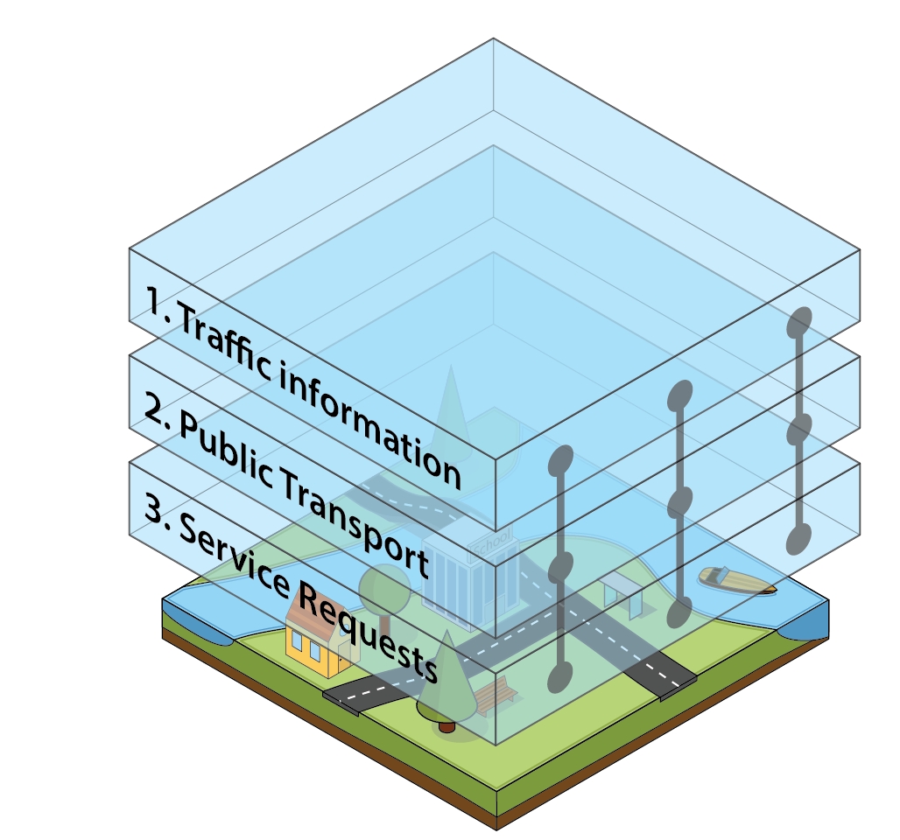
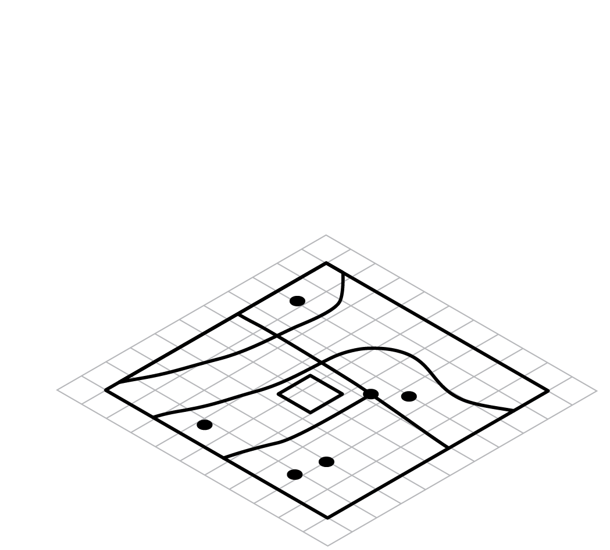
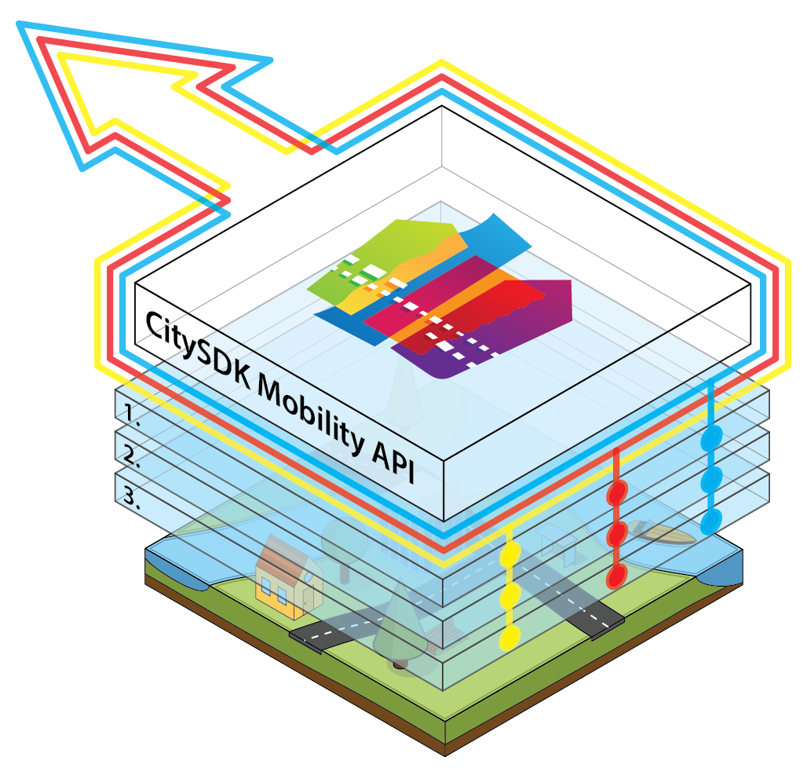
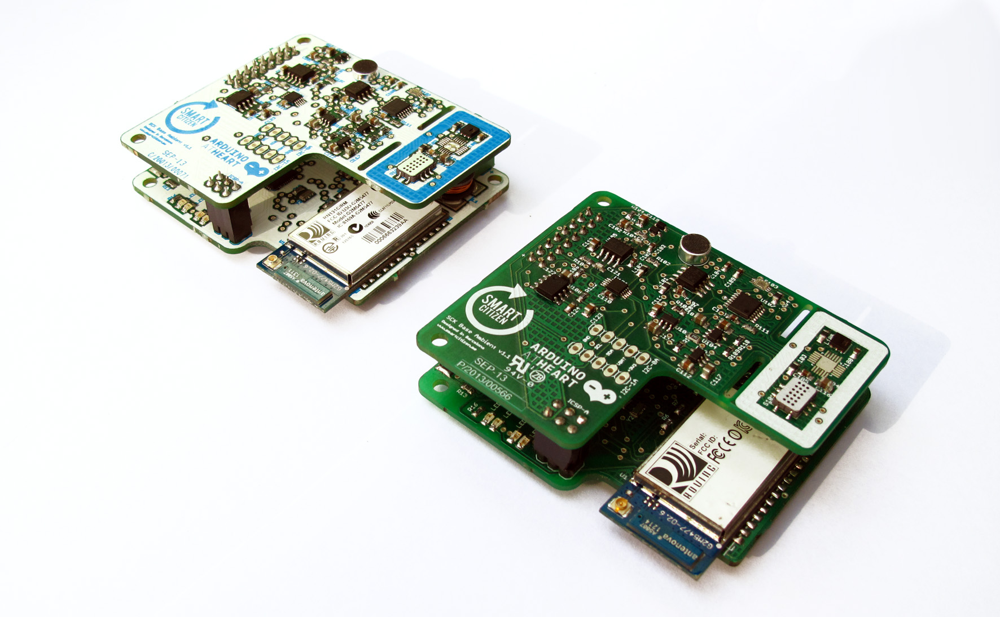
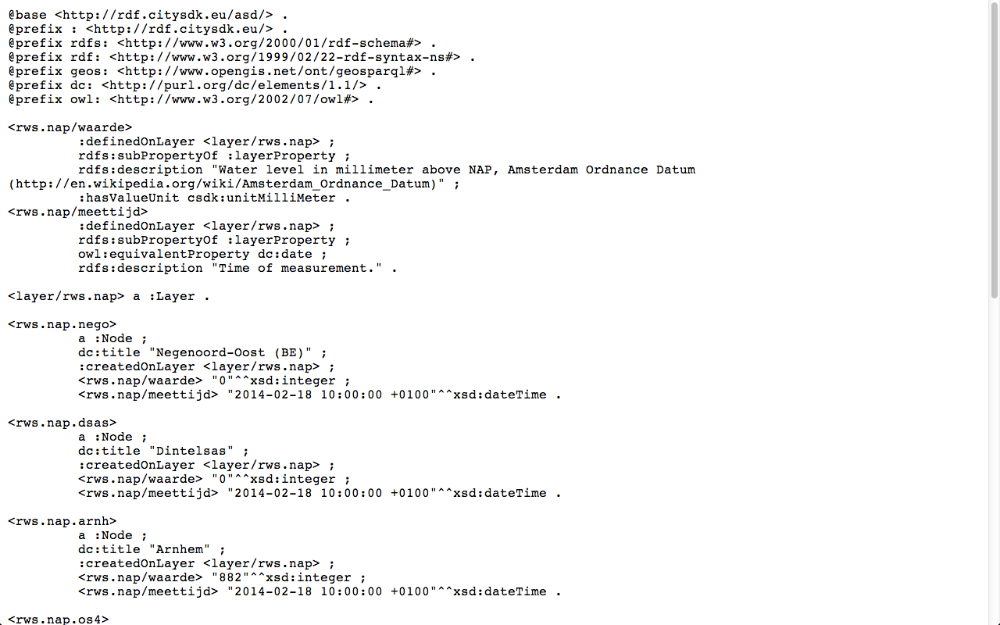

CitySDK Mobility API
Bert Spaan
Waag Society
Open data
Some problems

Data portal
Different file formats

BAG - addresses & buildings

GFTS
Many different data sources about single object

Amsterdam Central Station

DBpedia
GeoNames

Kadaster

OpenStreetMap
Cultural Heritage Site

Wikipedia

Foursquare
CitySDK Mobility API
Collects, describes, links, enriches & distributes data from different data sources
Example

Example: a city
Example: a city
Example: a city

Example: a city

Example: a city
Example: a city
Example: a city
Data from different data sources
One unified REST API

Public transport stops in the Netherlands

Public transport stops in Amsterdam

Real-time transit data
Mobility data
Public transport, parking, traffic information, weather forecasts, bicycles, addresses, POIs

CBS - API

CBS - Map

Arts Holland - API

Arts Holland - Map
SmartCitizenKit

SmartCitizenKit - API
Turtle
JSON & RDF/Turtle
Soon: GeoJSON, JSON-LD

Haarlem

Westland

Proosdij Deventer
Endpoints:
Amsterdam, Helsinki, Istanbul, Manchester, Lamia